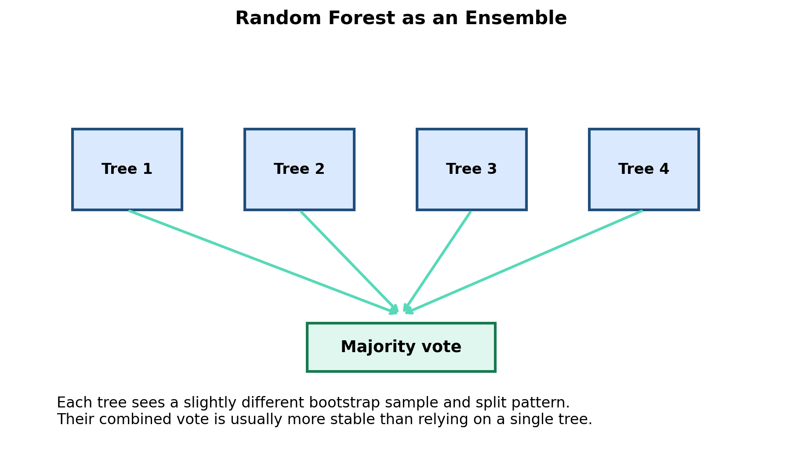
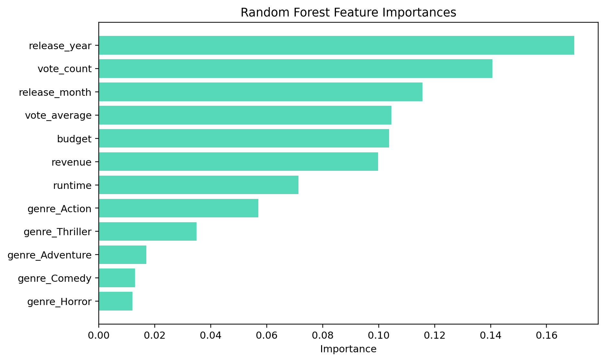
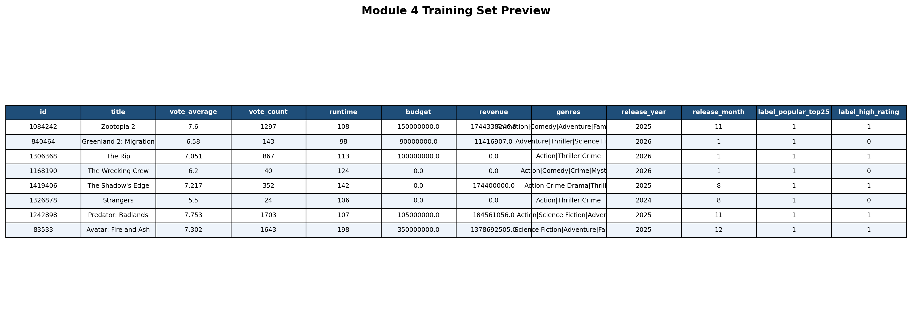
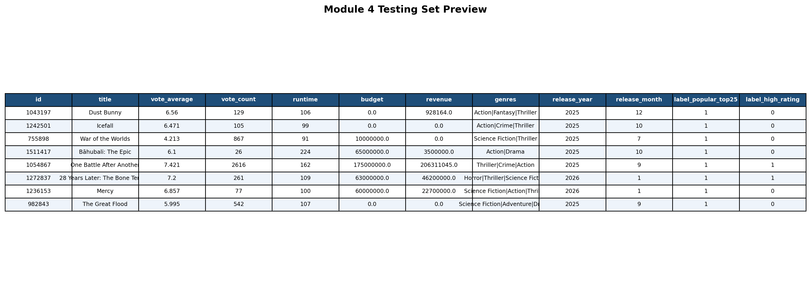
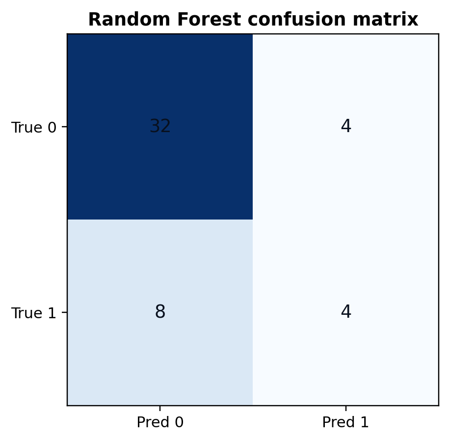
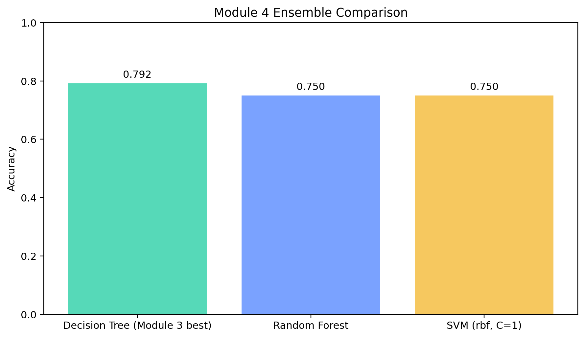
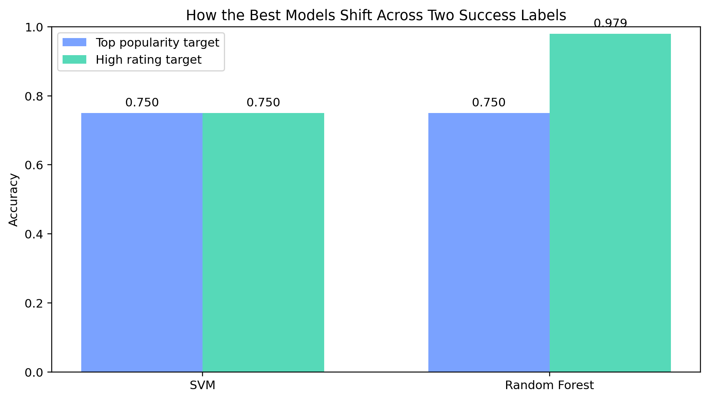

Ensemble learning combines multiple models so the final prediction is usually more stable than relying on one model by itself. Instead of trusting a single set of splits or one decision boundary, an ensemble lets several learners contribute to the final answer. This often helps reduce overfitting and smooth out the mistakes any one model would make on its own.
For this project, I chose Random Forest. A random forest is an ensemble of many decision trees. Each tree sees a slightly different bootstrap sample of the training data and a slightly different set of split opportunities. The final prediction comes from the trees voting together. That makes Random Forest a strong fit for this project because the earlier decision tree results already suggested that rule-based movie splits were useful.


To keep the Module 4 comparison fair, the ensemble model uses the exact same deduplicated dataset, labels, and train/test split as the SVM section. That means the comparison focuses on model behavior rather than changing the data underneath the models.
The main target is still label_popular_top25, and the feature set remains the same numeric
movie matrix with encoded genres. Because the training set and testing set are disjoint, the forest is
judged on movies it did not see while growing its trees.


The Random Forest workflow was written in the same Module 4 Python pipeline that generated the SVM assets, which keeps the comparison reproducible and consistent.
On the main popularity target, the Random Forest reached 0.7500 accuracy. That tied the best SVM result and came in just below the best single decision tree from Module 3, which reached 0.7917 accuracy. In other words, the ensemble was competitive, but it did not clearly beat the strongest earlier tree on this particular target.
The confusion matrix shows that the forest handled the negative class well and still captured part of the positive class, but it missed some of the top-popularity movies. That means the forest learned a useful movie-success pattern, yet the boundary between highly visible movies and the rest of the sample remains difficult because several movie profiles still overlap.
One especially useful result came from the secondary comparison. When the target changed from
top-popularity to label_high_rating, the Random Forest jumped to 0.9792 accuracy.
That suggests audience approval is easier for this ensemble to recognize than broad visibility. In
practical terms, the movie traits behind being well liked look more stable to the forest than the traits
behind becoming highly visible.



The ensemble results imply that movie success contains more than one kind of predictability. For top-popularity, the Random Forest was competitive but not dominant, which suggests visibility depends on a messy mix of signals and outside attention effects. For high ratings, however, the ensemble was extremely strong, which suggests audience approval follows a cleaner pattern in the movie attributes available in this dataset. That difference is one of the most important takeaways in the entire project.